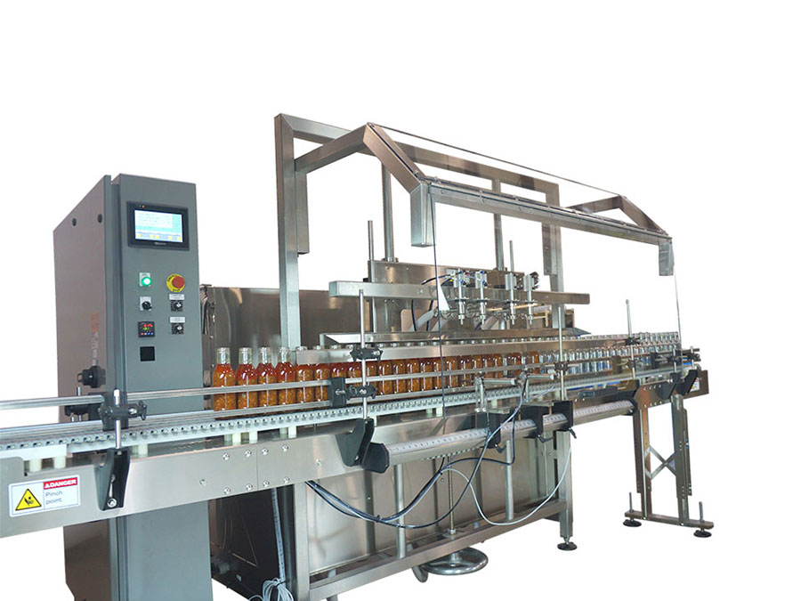

Krótkie serie, częste zmiany receptury, mieszane produkty — gdzie elastyczność jest tak samo ważna jak precyzja. Nordexa od 30 lat buduje maszyny dla zakładów, w których różnorodność nie jest problemem, lecz modelem biznesowym.

Produkcja małoseryjnaZmienne, małoseryjne wytwarzanie jest jednym z najtrudniejszych zadań w technice dozowania i pakowania. Elastyczność wymaga poważnych nakładów inżynierskich — ale zwrot z inwestycji jest proporcjonalny.
Jeśli na maszynie dziennie uruchamia się 3–5 produktów, czas przezbrojenia bezpośrednio ogranicza przepustowość. Automatyczne głowice do zmiany rozmiaru, jednoprzyciśnięciowe wywołanie receptury, przezbrojenie <15 minut z biblioteki receptur.
Przy małych seriach identyfikowalność jest kluczowa — jeśli partia jest wadliwa, trzeba dokładnie wiedzieć, która. Automatyczny batch record dla każdego uruchomienia, z dziennikiem partii i podpisem operatora.
Różne lepkości, różne rozmiary butelek i partii — na tej samej maszynie. Modularna wymiana głowic napełniających, szeroki zakres lepkości, zestaw adapterów do zmiany opakowań.
Dziś 200 szt./dzień, za rok może 2000. Architektura modułowa oznacza, że maszyna może być rozbudowana, a nie wymieniana — inwestycja jest długoterminowo wartościowa.
Produkty wielu zleceniodawców równolegle, z auditowaną segregacją i batch record.
Produkty sezonowe, premium i kolaboracyjne — mała ilość, ale wysokie wymagania co do wyglądu.
Partia rozwojowa, testowanie rynku, walidacja receptury — mała ilość, ale dokumentacja krytyczna.
Różne opakowania, etykiety, receptury dla różnych rynków — na tej samej linii produkcyjnej.
Napełnianie chemikaliów przemysłowych o małym wolumenie i unikalnych składach.
Napełnianie i pakowanie produktów zewnętrznych zleceniodawców — maszyna musi odpowiadać ich wymaganiom.
Najlepszy przyjaciel produkcji małoseryjnej — moduły wymienne, maszyna rozbudowywalna, przezbrojenie planowane.
Szczegóły →Jeśli portfolio jest tak szerokie, że biblioteka modułów nie wystarcza — w pełni indywidualny projekt.
Szczegóły →Jeśli produkt jest jednorodny i wolumen przewidywalny — sprawdzona platforma szybko i niezawodnie.
Szczegóły →Przy małej serii nie ma maszyny zapasowej — gwarancja serwisu to nie opcja, lecz sieć bezpieczeństwa produkcji.
Szczegóły →Opowiedzcie nam o Państwa produktach, rozmiarach partii i wymaganiach dotyczących przezbrojenia — nasi inżynierowie pokażą, jak to rozwiązać elastycznie i przewidywalnie.